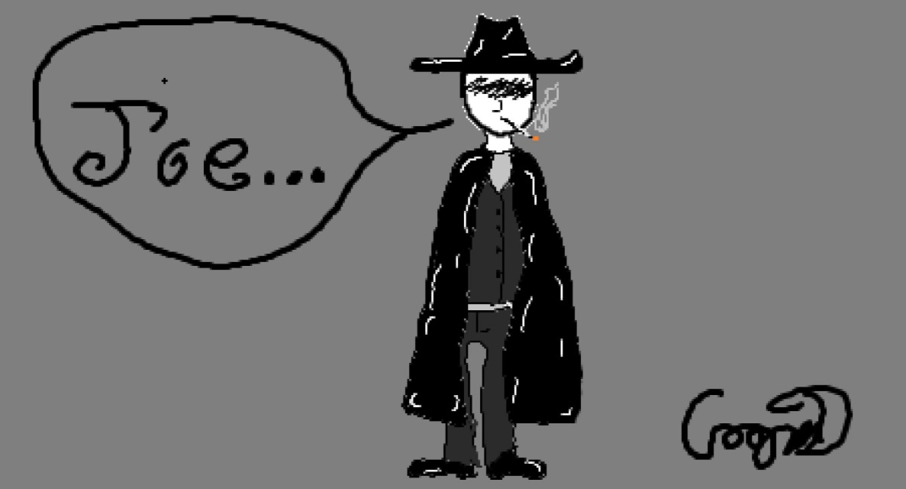
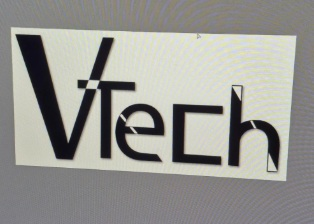

Cooper Donophan --- Projects
I've been known to be very artisitic, here are some of my favorite pieces!
A drawing I made of a gunslinger.
I've always had a fondness for the Wild West era of time and always imagined what the coolest cowboy would look like, this is what I drew.

Logo made for my friend.
My friend, Carter asked me if I coould design a logo for his clothing brand "VTech" He wanted something simple, but powerful, he ended up loving what I made.

Logo made for my Coding class at James Rumsey Technical Institute.
My coding teacher told my class to make a logo design for a t-shirt without using more than three colors, I tries to only use two.